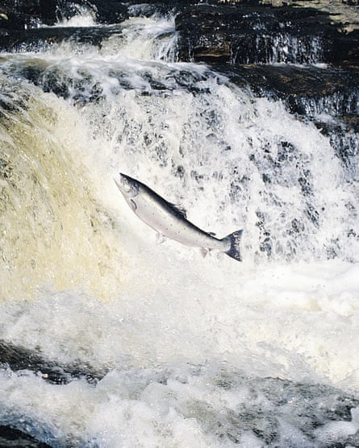
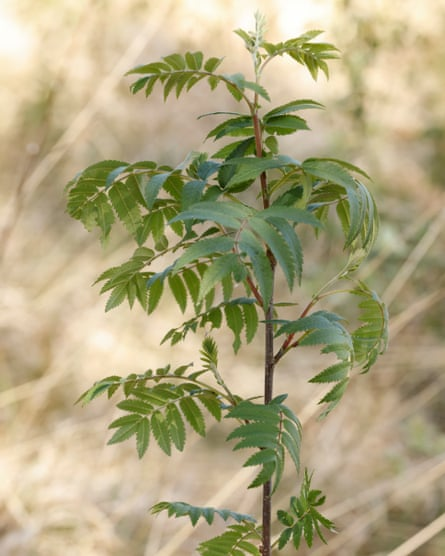
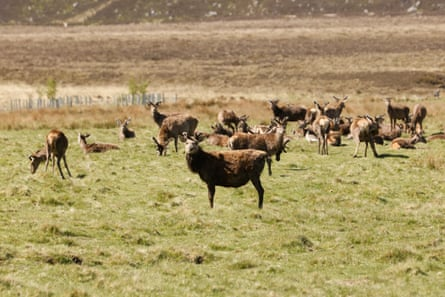
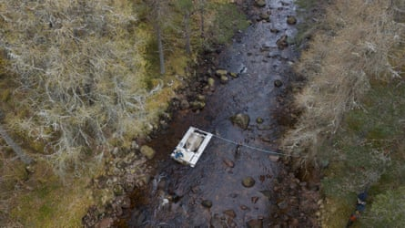
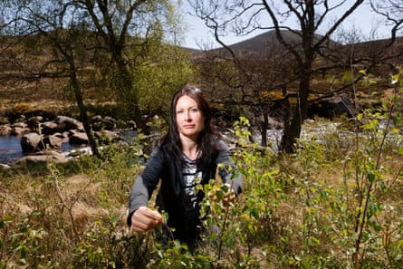

O n an unusually hot May day in Aberdeenshire, Edwin Third stands on the bank of the River Muick, a tributary of the UK’s highest river, the Dee, talking us through the rising threats to one of Scotland’s most celebrated species, the Atlantic salmon. Against the hills of the Cairngorms national park, a herd of stags on the moorland bask in the sun.
It is a spectacular landscape, attracting hikers, mountain-bikers and salmon fishers, the latter contributing an estimated £15m to Aberdeenshire’s economy.
But according to Third, the river operations manager for the Dee District Salmon Fishery Board and River Dee Trust, the changing climate threatens the survival of spring salmon in the Dee’s Special Area of Conservation, a place where King Charles learned to fly-fish.
Spring salmon populations in Scotland have declined steeply due to rising temperatures and changes in river flow.Photograph: Digital Vision./Getty Images
Temperature rises on the upper tributaries, the birthplace of the spring salmon, and altered flow patterns caused by increasing winter floods, are linked to a “massive decline” in the river’s spring salmon population, Third says.
Spring salmon are renowned for their athleticism, migrating thousands of kilometres to west Greenland and back, leaping up waterfalls, to return to their natal streams to spawn.
“We have over 300km of streams classified as vulnerable to warming water temperatures,” says Third, holding up what he describes as a “scary map” of such rivers drawn up by the Scottish government. “We’ve had 27.5C in some. Salmon feel stress at anything over 23C .”
Third, who was born in Deeside, has worked on the river for three decades. He recalls a time when chunks of ice would break off and be swept downstream. But temperatures in the Dee have increased by 1.5C over 30 years.
As the yellow streaks on the map attest, many of its upper tributaries are now classified as highly vulnerable to rising temperatures. Which spells trouble ahead for the Dee – one of Scotland’s “big four” salmon rivers, those most renowned for their fishing – which has so far escaped the dramatic decline in salmon populations seen elsewhere. In Scotland, 153 rivers , or 72%, have a conservation status of “poor” for salmon, while the Dee is among 31 (15%) rated as “good”.
But data from the Scottish government’s longest-running wild salmon monitoring programme, on a key tributary of the Dee called the Girnock Burn, near the Muick, has alarmed conservationists, anglers and landowners. It recorded a single, solitary female salmon returning to spawn in 2024, the lowest since records began, down from 200 in 1966 . Another tributary, the Baddock, had the fourth lowest returning females on record, just seven in total.
The figures mark a “catastrophic decline” in the river’s spring salmon numbers, according to the Missing Salmon Alliance, a group of conservation and angler organisations.
Regenerating saplings, part of riverbank and habitat restoration on the River Muick tributary.Photograph: Murdo MacLeod/The Guardian
Alongside other warning signs, including a 96% drop in rod catches of spring salmon from 8,000 in the 1950s to less than 500 today, a 20-year project known as “ Save the Spring ” is aiming to halt the decline.
An initial five-year, £5m partnership, between the Dee District Salmon Fishery Board, a statutory body, River Dee Trust, the Atlantic Salmon Trust and the University of Stirling and UHI Inverness, has two parts, restoring and improving habitats and a controversial pilot intervention known as “conservation translocation”. The latter, based on a project in the Bay of Fundy, in Canada, has been used by the Royal Zoological Society of Scotland to reintroduce wildcats to the Cairngorms to save them from extinction.
The intervention will tackle the most perilous part of a salmon’s lifecycle, at sea. Currently only three in every 100 salmon return, Third says. The idea is that by intervening in this part of the lifecycle, mortality will improve.
Last year, about 100 smoults, or young salmon, were caught, put in a tank and driven 200 miles (320km) to a larger seawater tank on the west coast. When they are fully grown, later this summer, they will be returned to the river.
But the bulk of the work is tree planting to bring shade and river re-engineering, to slow and improve river flow.
“The extremes of flows are one of the pressures on salmon,” says Lorraine Hawkins, river director of the Dee District Salmon Fishery Board and Trust. “They can wash juveniles and eggs out of the river.”
Placing dead trees in the water alters the flow, creating ideal habitats for salmon to spawn and eggs to survive, she says.
Summer is becoming drier here, which increases stress on salmon, leaving them stranded in dried-up beds. Hawkins has received callouts from the public to rescue stranded fish.
Without woodland, floods and droughts can worsen, and river temperatures can rise. In the Muick, wild salmon populations, while still critically low, have shown signs of improvement after a decade of restoration, according to Save the Spring.
Deer contribute to the deterioration of the habitat through over grazing, reducing tree cover along rivers.Photograph: Murdo MacLeod/The Guardian
Third points to moorland dotted with bog cotton and, aside from the saplings of alder, birch and Scots pine his colleagues have planted, few trees. The upper Dee has 8% tree cover, he says, compared to an average of 37% in Europe .
“The river would have had woodland in the past,” he says. “There are so many deer here, the trees don’t get peace to grow.”
The deer numbers are kept up for high-paying guests to hunt on the private estates bordering the river. Balmoral and Glenmuick estate are among the project’s supporters.
Baby salmon are trapped in the River Dee and transferred farther north to be grown before being reintroduced back into the river to try to improve the salmon population.Photograph: riverdee.org
Save the Spring is not without its critics. A paper published last year suggests salmon restoration schemes such as the Dee are based on limited scientific evidence. It also argues that since the highest mortalities are marine, river restoration is likely to have a marginal impact. Questions have also been raised about the pilot’s potential to introduce diseased fish, grown elsewhere, to a pristine river.
A spokesperson for Save the Spring says it is dealing with “critically low wild salmon populations” facing the threat of extinction: “They do not have the luxury of another 30 years of academic study – they are a species on the brink.”
The project is guided by the International Union for the Conservation of Nature (IUCN) best practice guidelines, and works with senior scientists, in consultation with experts in Atlantic salmon conservation, landscape ecology, peatland restoration, government policy and water resource management, the spokesperson says.
Lorraine Hawkins, river director of the Dee District Salmon Fishery Board, with regenerating saplings. She says extreme flows can wash juveniles and eggs out of the river.Photograph: Murdo MacLeod/The Guardian
Already, 150,00 trees have been planted along the Muick, including on a fenced-off 40-hectare site on the Balmoral estate. The shade provided, when the trees mature, can cool water temperatures by a few degrees, says Third.
The target is 1 million new trees by 2035, including native rowan, aspen, Scots pine, birch, willow and hawthorn. Fishery boards across Scotland have similar tree-planting programmes, to provide shade to lower water temperatures.
“This is about doing something now, to build up resilience for what’s coming down the line in 10, 20 or 50 years’ time,” says Third. “The salmon will have a fighting chance.”